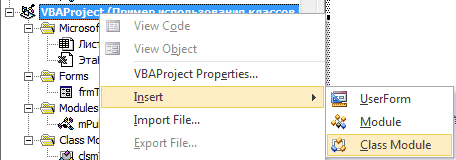
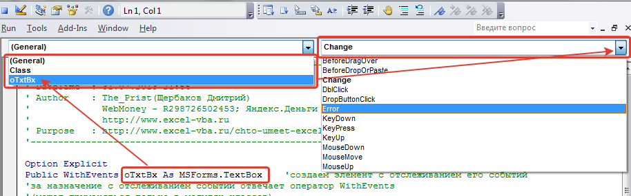

Tips_Macro_UseClassModules.xls (63,5 KiB, 2 659 скачиваний)
Tips_Macro_UseClassModules.xls (63,5 KiB, 2 659 скачиваний)Работа с модулями классов
Многие наверняка слышали про модули классов, но не все их используют. На самом деле довольно многие программирующие на VBA за все время программирования прекрасно обходятся без применения модулей классов. Т.к. VBA не является языком объектно-ориентированного программирования(ООП) в строгом смысле слова, то пользовательские классы здесь не обязательны и как следствие не так уж и часто используются при разработке. Это не значит, что VBA не содержит модулей классов: модули книги, листов, пользовательские формы - все это модули классов. Многие, кстати, используют их даже не зная того, что используют именно модули классов. Т.к. модуль листа, книги и формы - это модуль класса, то почти каждый, кто работал с формой работал с модулем класса. В чем их большая польза - с их помощью можно отслеживать различные события объектов. Для форм это события самой формы или любого её элемента - например CommandButton_Click или TextBox_Change. Но мы сейчас рассмотрим лишь тот тип модулей, который в VBA обычно называют модулем класса - Class Module.
Модуль класса(Class Module) – это модуль, содержащий программные коды, которые реализуют работу пользовательских классов. В подавляющем большинстве случаев создается специально для отслеживания событий различных объектов. Создается так же, как и любой другой объект проекта: в окне проводника объектов щелкаем правой кнопкой мыши на нужном проекте-Insert-Class Module

Но прежде чем создать модуль, необходимо понять, что мы будем в нем хранить и для чего он нам. Возьмем для примера самую распространенную проблему: на форме создано несколько ТекстБоксов и необходимо отследить событие ввода данных в эти ТекстБоксы. Обычно делается все просто - для каждого ТекстБокса прописывается отслеживание события:
Private Sub TextBox1_Change() MsgBox "Изменено значение TextBox1" End Sub Private Sub TextBox2_Change() MsgBox "Изменено значение TextBox2" End Sub Private Sub TextBox3_Change() MsgBox "Изменено значение TextBox3" End Sub 'и т.д.
|
Private Sub TextBox1_Change() MsgBox "Изменено значение TextBox1" End Sub Private Sub TextBox2_Change() MsgBox "Изменено значение TextBox2" End Sub Private Sub TextBox3_Change() MsgBox "Изменено значение TextBox3" End Sub 'и т.д. |
С одной стороны - все верно. А с другой: что если таких текстбоксов у нас не 3, а 43? Не очень удобно для каждого событие прописывать. Да и читабельность такой "портянки" кода тоже значительно падает.
Или другая ситуация - необходимо "на ходу" создать ТекстБоксы на форме и в дальнейшем отслеживать их события. Как тут быть? Ведь раз ТексБоксов еще нет - то и события в форме для них не создать. Создание для них кодов обработки событий заранее ничего не даст - они не будут связаны с самими объектами, поэтому и пытаться даже не стоит. Почему так - при создании элемента вручную VBE делает за нас всю грязную работу - он сам ассоциирует созданный объект с событиями, предназначенные для него заранее. Если же создать объект программно - то часть грязной работы придется делать самим. И создание модуля класса, с описанием в нем объекта ТекстБокс и его событий, как раз очень даже подойдет.
Рассмотрим сразу оба случая. Что нам для этого потребуется:
Чтобы было проще вникать советую скачать файл с готовыми кодами:
Tips_Macro_UseClassModules.xls (63,5 KiB, 2 659 скачиваний)
Для начала создадим на нашей форме frmTest 4 ТекстБокса, не меняя их имена(по умолчанию они будут TextBox1, TextBox2, TextBox3, TextBox4). Это для того, чтобы понять как применить модули класса к уже созданным ранее на форме элементам.
Далее в стандартный модуль mMain поместим следующий код:
Option Explicit Public aoTxtBxes(1 To 8) As New clsmTxtBxes Sub Show_Form() frmTest.Show End Sub
Option Explicit
Public aoTxtBxes(1 To 8) As New clsmTxtBxes
Sub Show_Form()
frmTest.Show
End Sub
aoTxtBxes - массив, который будет содержать до 8 ТекстБоксов. Объявляется как Public (чтобы был доступен из любого модуля проекта. Подробнее в статье: Что такое переменная и как правильно её объявить?). Обращаю внимание, что данный массив объявлен как созданный нами модуль класса - As clsmTxtBxes. Это обязательное условие. Если у вас модуль класса называется ClassModule1, то и объявлять aoTxtBxes следует соответственно:
Public aoTxtBxes(1 To 8) As New ClassModule1
|
1 |
но я не приветствую подобный подход, т.к. имя ClassModule1 ни о чем нам не говорит, в то время как clsmTxtBxes сразу дает понять, что там мы обрабатываем ТекстБоксы. Хотя это дело вкуса. Если в одном модуле класса собраны различные событийные процедуры для разных типов(TextBox, ComboBox, ListBox и т.д.) - то конечно, имя лучше дать более общее.
Теперь в созданный модуль класса clsmTxtBxes запишем создание объекта и код, который хотим применить для всех наших ТекстБоксов:
Option Explicit Public WithEvents oTxtBx As MSForms.TextBox 'событие изменения текста в TextBox-ах Private Sub oTxtBx_Change() MsgBox "Вы изменили значение " & oTxtBx.Name, vbInformation, "Информационное окно" End Sub
|
Option Explicit Public WithEvents oTxtBx As MSForms.TextBox 'событие изменения текста в TextBox-ах Private Sub oTxtBx_Change() MsgBox "Вы изменили значение " & oTxtBx.Name, vbInformation, "Информационное окно" End Sub |
Public WithEvents oTxtBx As MSForms.TextBox - создаем объект типа ТекстБокс с отслеживанием его событий. Идентификатором объекта с отслеживанием событий служит оператор WithEvents (может применяться только в модулях классов).
Если необходимо отследить изменения не TextBox, а ComboBox, то соответственно объявляем объект нужного типа:
Public WithEvents oCmbBx As MSForms.ComboBox
Сами события для контролов не берутся из головы и не пишутся вручную - они уже есть и следует использовать именно те, которые доступны. Чтобы для конкретного элемента создать событие, необходимо перейти в модуль класса, вверху в левой части выбрать из списка нужный объект(в нашем случае это oTxtBx) и после этого в правом списке выбрать событие(в этом списке перечисляются все процедуры, доступные для выбранного объекта):

Для выбранного события в модуле будет автоматически создана новая процедура.
Процедуры, события для которых уже созданы, выделяются в списке жирным шрифтом и при выборе их из списка происходит переход в процедуру выбранного события.
Завершающий этап - создаем код в модуле формы frmTest, который создаст недостающие ТекстБоксы и свяжет их и ранее созданные с модулем класса:
Option Explicit Private Sub UserForm_Initialize() Dim i As Integer 'Присваиваем последовательно значениям массива aoTxtBxes значения объектов, существующих на форме For i = 1 To 4 Set aoTxtBxes(i).oTxtBx = Me.Controls("TextBox" & i) Next i 'создаем 4 своих TrxtBox-а помимо имеющихся на форме и так же заносим в массив aoTxtBxes For i = 5 To 8 Set aoTxtBxes(i).oTxtBx = Me.Controls.Add("Forms.TextBox.1", "TextBox" & i) 'задаем позицию нового TextBox aoTxtBxes(i).oTxtBx.Left = 100 aoTxtBxes(i).oTxtBx.Top = Me.Controls("TextBox" & i - 4).Top Next i End Sub
|
Option Explicit
Private Sub UserForm_Initialize() Dim i As Integer 'Присваиваем последовательно значениям массива aoTxtBxes значения объектов, существующих на форме For i = 1 To 4 Set aoTxtBxes(i).oTxtBx = Me.Controls("TextBox" & i) Next i 'создаем 4 своих TrxtBox-а помимо имеющихся на форме и так же заносим в массив aoTxtBxes For i = 5 To 8 Set aoTxtBxes(i).oTxtBx = Me.Controls.Add("Forms.TextBox.1", "TextBox" & i) 'задаем позицию нового TextBox aoTxtBxes(i).oTxtBx.Left = 100 aoTxtBxes(i).oTxtBx.Top = Me.Controls("TextBox" & i - 4).Top Next i End Sub |
Кратко описать, что делает эта процедура, можно так:
Если необходимо больше ТекстБоксов обработать - увеличиваем верхнюю границу массива aoTxtBxes(если хотим вместить 20 текстбоксов - Public aoTxtBxes(1 To 20) As New clsmTxtBxes). Если заранее неизвестно количество - либо задаем с запасом, либо объявляем aoTxtBxes как динамический массив(Public aoTxtBxes() As New clsmTxtBxes), а границы определяем в процессе(посредством ReDim Preserve). Но это уже совершенно другая тема.
Конечно, здесь я привел лишь маленький пример показа сообщения при изменении ТекстБокса. Но ведь можно таким образом отследить практически любое доступное событие. И не просто сообщение показывать, а запретить ввод букв, делать проверку введенного значения на соответствие шаблону и пр. Все зависит от конкретной задачи.
Так же дополню, что подобным образом можно создавать и отслеживать и иные элементы форм. Для этого необходимо лишь изменить тип элемента здесь:
Me.Controls.Add("Forms.TextBox.1", "TextBox" & i)
Me.Controls.Add("Forms.TextBox.1", "TextBox" & i)
и соответственно изменить/добавить тип переменной в модуле класса:
Public WithEvents oCmbBx As MSForms.ComboBox
Public WithEvents oCmbBx As MSForms.ComboBox
Всего для создания доступно 11 встроенных типов контролов:
ComboBox - MSForms.ComboBox
CheckBox - MSForms.CheckBox
CommandButton - MSForms.CommandButton
Frame - MSForms.Frame
Image - MSForms.Image
Label - MSForms.Label
ListBox - MSForms.ListBox
MultiPage - MSForms.MultiPage
SpinButton - MSForms.SpinButton
TabStrip - MSForms.TabStrip
ToggleButton - MSForms.ToggleButton
И небольшая ложка дегтя: из модулей классов доступны не все события. Например, для TextBox-ов нет события Exit. Это порой расстраивает. И никак это не исправить - нет его и все...
Скачать пример:
Tips_Macro_UseClassModules.xls (63,5 KiB, 2 659 скачиваний)
Также см.:
Что такое модуль? Какие бывают модули?
Что такое переменная и как правильно её объявить?
Variable not defined или что такое Option Explicit и зачем оно нужно?